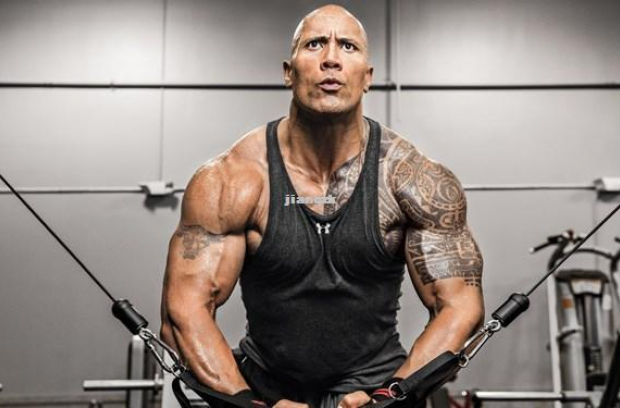

Як підтримувати себе в хорошій фізичній формі в домашніх умовах
Здоров'я, Травень 2, 2020
На сьогоднішній день, люди дуже зайняті роботою, і у них не вистачає зовсім часу на своє здоров'я. Нам так хочеться гарно виглядати, мати струнку фігуру і тримати м'язи в тонусі. Якщо у вас зовсім немає часу на тренування у тренажерному залі, чи вам соромно і незручно, то займіться собою вдома – це цілком можливо. як підтримувати себе в хорошій фізичній формі в домашніх умовах В першу чергу перейдіть на заняття близько години часу. Це не викличе у вас особливих труднощів і не відверне від важливих справ. Приміром, скоротіть час проведення в інтернеті і приділіть собі годинку, або ж прокидайтеся раніше. Які вправи можна виконувати вдома? Вправ сила-силенна, поговоримо про основні. Прокинувшись рано вранці, виконайте невелику зарядку, щоб добре розігріти свої м'язи. Відмінною вправою після зарядки будуть звичайні віджимання, які ви з легкістю можете виконувати вдома. Віджимання добре розвивають м'язи грудей і рук. Та й у цілому підтримують все тіло в тонусі. Щоб віджимання були ефективними, визначте свій максимум, яку кількість разів ви можете зробити вправи. Далі, наприклад, щотижня додайте по 2 віджимання до загальної кількості, так ви не дасте м'язам звикнути до постійного навантаженні.
Наступною відмінною вправою стане згинання тулуба лежачи, або качання преса в стандартній позі. Ляжте на підлогу, ноги бажано добре закріпити, щоб вони не піднімалися. Робіть згинання і розгинання з невеликою амплітудою, тримаючи м'язи преса в тонусі. Наступна вправа відмінно зміцнить ваші руки і плечі. І так нам знадобиться стілець і ліжко. Поставте стілець до ліжка, самі сядьте на нього, а ноги обіпріть на ліжко. Робіть згинання рук в лікті – сідаючи (вправа ідентична віджимань на брусах). Так само, як і при віджиманнях від підлоги визначте свій максимум і щотижня збільшуйте навантаження. Для наступної вправи нам знадобляться гантелі, якщо таких немає, можете використовувати звичайні пластикові пляшки, в які налита вода, або насипаний пісок. Робіть розведення гантелей в сторони вгору, комбінуйте вправи, додавайте свої. Звичайні присідання підтримають ваші ноги в хорошій формі. Просто встаньте, ноги поставте на ширині плечей, руки витягніть вперед і робіть стандартні присідання тільки з повільною швидкістю, щоб добре відчути м'язи ніг. Так само можете ознайомитися з вправами за методикою Анохіна. Вправи виконуються всі дома і не складні у виконанні. Дані прості вправи при щоденних заняттях і завзятості будуть підтримувати вас у відмінній формі і настрої.
Модніі види спорту
Здоров’я, Квітень 23, 2020
Сьогодні, займаючись спортом, багато хочуть не тільки бути здоровими і фізично розвиненими, але і бути в тренді, мати можливість показати себе і справити враження на публіку. Цьому можуть посприяти заняття такими сучасними видами спорту, як: тріатлон, воркаут, кроссфіт, футбол. Потрібно відзначити, що всі ці види є динамічними і видовищними і, як правило, призначені для відкритих просторів, але ними також є можливість займатися і в закритих спортивних залах. Перерахуємо фактори, що сприяють популярності в кожному із зазначених видів спорту.
ТріатлонТріатлон є циклічним видом спорту, який складається з плавання, велосипеда і бігу. І хоча він є відносно новим видом спорту, але він вже зміг придбати чималу популярність серед любителів спорту. На сьогоднішній день займатися тріатлоном вельми престижно. Даний вид спорту являє собою захоплююче змагання з масовим стартом атлетів, долаючи певну дистанцію послідовно в трьох дисциплінах з проходженням двох транзитних зон. Змагання перетворюються на справжнє спортивне свято, як для учасників, так і для глядачів. Зазвичай організовується велике стартове містечко з усіма зручностями. Також даний вид спорту відрізняється в його неймовірній складності зважаючи на колосальні навантаження в динамічному поєднанні трьох видів спорту. Недарма «Залізна дистанція» в тріатлоні, долаючи яку тріатлети стають «Залізними людьми», вважається найскладнішою у світі.
ВоркаутЦе новий і швидко розвиваючий вид дворового спорту, що відноситься до вуличної гімнастики, що складається у виконанні різних вправ на перекладені, брусах, шведських стінках і інших конструкціях. Цей вид спорту дає можливість пограти своїми м'язами на публіці, блиснути своєю спритністю, силою, незвичністю і оригінальністю у виконанні тих чи інших спортивних елементів.
КроссфітЦе новий напрям у спорті. Кроссфіт – це система фізичних вправ з елементами інтервальних тренувань високої інтенсивності, що включає в себе цілий комплекс вправ від важкої атлетики та пауерліфтингу до гімнастики і бігу. Цей молодий вид спорту є дуже видовищним і представляє чималий інтерес для глядачів. У ньому спортсмени демонструють свій універсальний фізичний розвиток відразу в ряді різних дисциплін, показують небачену витривалість і мужність. Нерідко проводяться відкриті майстер-класи в торгових центрах, де спортсмени своєю різнобічною майстерністю викликають неприховане захоплення у навколишньої публіки.
ФутболУ великій популярності і видовищності цього командного виду спорту вже давно ніхто не сумнівається. Футбол – це безсмертна класика, не втрачає своєї актуальності і донині. Зародившись у дев'ятнадцятому столітті в Англії, футбол дуже швидко набрав популярність і став збирати величезні натовпи глядачів. Почалися будуватися численні стадіони, що вміщають десятки тисяч глядачів. Хоча це командний вид спорту, але і в ньому є можливість показати себе в індивідуальній грі за допомогою віртуозного дриблінгу і красивої техніки, наприклад, як у Кріштіану Роналду і Ліонеля Мессі.
Спорт всьому головаЯкий би вид спорту ви не вибрали, займаючись ним, ви зробите свій організм більш міцним, красивим і сильним. Краса, здоров'я і довголіття – все це позитивні результати від занять спортом. Але слід також пам'ятати і про можливі ризику для свого здоров'я. Необхідно дотримувати обережність і обачність під час спортивних занять і не переборщувати з їх обсягом, частотою та інтенсивністю.
Коротко про нас
Тільки я, я та я, вивчаю світосприйняття і хочу поділитися своїм світом з вами..
Популярні статті
-  Джонсон Дуейн The Rock
- Чому треба пити більше води
-
 Психологія здоров’я
Психологія здоров’я
- Ентоні Джошуа
Реклама
За натхненням сюди!
Ентоні Джошуа
Джонсон Дуейн The Rock
Чому треба пити більше води
Психологія здоров’я
Підписатися
Введіть свій електронний лист нижче та отримайте сповіщення в останніх публікаціях блогу.